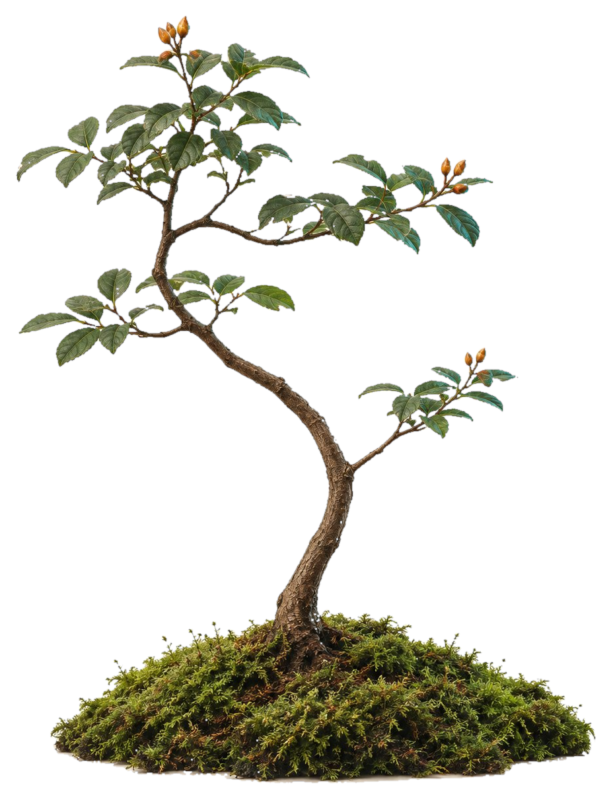

现状400px 喂养台 + 大舞台 + 48px 抽屉v0.1
操作 400 · 29%装饰 780 · 56%输出 48px · 折叠
语感花房
Specimen 001 · 你的语气
8 条规则 · 深读 1 版
成熟度68%
再补 2–3 段“AI 原稿 → 你的改写”

先给结论
删掉客套结尾
短句为主
SPECIMEN 001你的语气 · 未成形
语气62
节奏71
用词55
结构48
场景40
它刚学会：先给结论，再补边界条件
建议300px 标本 + 写作主栏 + 340px 常驻档案proposal
标本 300 · 23%写作 560 · 43%档案 340 · 26%
语感花房
标本 001 · 你的语气68% 成形
喂养台
粘贴你写的东西，或一段你改过的回复。本地分析，不联网。
186 / 20000
⌘ ↵ 提交
只在本地分析 · 立即生效
最近投喂
6 条 · 1,286 字-
语料
关于缓存选型的一段回复186 字 · 3 分钟前
-
纠正
会议纪要改写312 字 · 昨天
-
直给
别用“赋能 / 闭环”12 字 · 昨天
-
语料
复盘：为什么先不上微服务248 字 · 前天